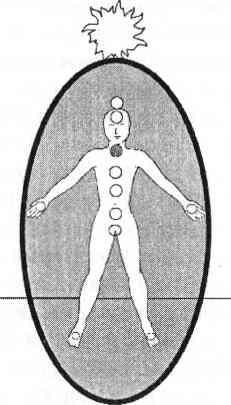

BEŞİNCİ ÇAKRA BOĞAZ ÇAKRASI
Bu safir mavisi, etki edici çakra boynun dibindeki oyuk kısmın tam üstünde bulunur; bedenle ruh arasındaki iletişimi sağlar ve bunu dış dünyaya iletir. Tiroit ve paratiroit bezleri ile ilişkilendirilir.

Ruhtan gelen bilgiyi gerçeğe çevirebilme yeteneği nedeniyle beşinci çakra aynı zamanda değişim ve taahhüt merkezidir. Beşinci çakranın sağlıklı olması sadece şimdiki anın iletişimi ile değil aynı zamanda içerde ve dışarıda değişimin seviyesi ile de doğrudan bağlantılıdır. Çoğu durumda boğaz ve ensedeki tıkanıklıklar ya da hastalıklar ya da enseden başlayan baş ağrıları kişinin kendini ifade etmek ya da değişmek konusundaki isteksizliğinin işaretidir.
Beşinci çakra aynı zamanda “duruduyum” (clairaudience) yeteneğinin merkezidir. Bu, özellikle gaipten sesler duymanın şizofreni ve diğer ruhsal hastalıklarla bağdaştırıldığı Batı dünyasında dengelemesi zor bir psişik yetenektir. Sezginin ötesine geçen psişik yeteneklerin tıp dünyasında kabul görmemesi yüzünden pek çok şanssız kişi ilaçlar verilip enstitülerde tutularak dünyadan uzaklaştırılır. Gaipten sesler duymak, “durugörü” yeteneğinin kabul edilebilirliğinden kırıntı kadar pay alamaz. Sesler duyan psişikler destek görmedikleri gibi deli olduklarına da inandırılırlar.
Bu, ruhlardan uzak yaşamaya çalışan bir toplumun hoş olmayan bir gerçeğidir. Ruh olmadan hayat mümkün değildir. Maalesef en fazla zorluk çeken kişiler gerçek ama ispat edilemeyen spiritüel soruları olan kişilerdir. Belki de biz, spiritüel anlamda eğitilmiş kişiler, beşinci çakralarımızı kullanarak psikiyatrik tedavilerdeki spiritüellik gerektiren sorunlarla iletişim kurabiliriz.
Beni asıl üzen, aşırı duruduyum eğilimi olan çok açık bir boğaz çakrasını iyileştirmenin iki dakikalık bir iş olması. Elinizle azıcık kapayın, önüne ve arkasına topraklanmış nöbetçiler koyun, topraklanmanızı yenileyin ve auranızı biçimlendirin. Belki de bu basit bilgi akıl hastanelerinde ya da evsizlerin sığınaklarında fısıldanmalıdır.
Beşinci çakranın enerjisi kimi zaman üst ve alt yarılarında renk farklılığı gösterir. Bunun nedeni alttaki dördüncü ve üstteki altıncı çakra için aynı zamanda farklı yönlendirme görevleri yapmakta olmasıdır. Dördüncü ve beşinci çakralar arasındaki iletişim iyi olduğunda, beşinci çakra kalbin ve bedenin isteklerini açık bir şekilde yansıtır. Böyle bir anda beşinci çakranın alt yarısındaki enerji rahatlıkla hareket eden mavi bir renk alır. Eğer dördüncü ile beşinci çakranın iletişimi iyi değilse ve beşinci çakranın alt yarısındaki enerji koyu renk, rahat hareket etmeyen ya da ölü enerji ise bu kişinin çok fazla verici olduğunun; yardım isteyemediğinin veya kalpten konuşmadığının işaretidir.
Durugörü yetenekli altıncı çakrayla beşinci çakra arasında iletişimin olması çok iyidir; kişi sezgilerini, vizyonlarını ve idrak etme yeteneklerini paylaşabilir. Bu noktada beşinci çakranın üst yarısındaki enerji mavidir ve rahatlıkla hareket edebilir durumdadır. Eğer iletişim kötüyse, sezgileri olan kişi içte ve dışta kabul görmüyorsa beşinci çakranın üst yarımı koyu, ağır hareketli ya da garip bir şekil almış enerji ile doludur.
Durugörü yoluyla algılama yeteneği erkeklerde genellikle daha kolay kabul görür. Çünkü iş hayatında özgürce kullandıkları bu derin sezgiye “muhakeme” adını verdiklerinde her şey yoluna girer. Kadınların altıncı çakra enerjileriyse genellikle daha az kabul görür ve “sezgi” olarak tanımlanır, bu yüzden kadınların altıncı ve beşinci çakraları karartılmıştır.
Genellikle bir kadının duygular olmadan muhakeme etmesi, ki bu altıncı çakra özelliğidir, alışıldık bir durum değildir. Bunun sonucunda empatik ve duygulu dördüncü çakrasını gereğinden fazla kullanır; bu da enerji sisteminin bütününün dengesini bozar. Kalp çakrasının empatisi, altıncı çakranın, ayırt etmek, muhakeme etmek ve olaylara kuşbakışı bakmak konusundaki dengeleyici desteğine sahip olmadığı için böyle bir kadın nesnel olma özelliğini yitirebilir. Fazla dişi enerji kullanan erkeklerde de sezgi/muhakeme dengesizliği görülür.
Erkek ya da kadın, fazla eril enerji kullanan kişilerdeyse bunun tersi bir dengesizlik görülür. Duygusal olmayan, muhakeme edici altıncı çakra enerjisi aşırı derecede kullanılırken, kalbin duygulu, sezgisel ve sevgi dolu nitelikleri bastırılır. Erkeklerin, sezgisel altıncı çakradan gelen şeyleri bilmeye izinleri vardır; ancak kalp çakralarından gelen sevgi, bağlılık ve hissetmekle ilgili şeyleri bilmeye izinleri yoktur. Toplumun bu bakış açısı pek çok erkeği empati kurmaktan ve insan sıcaklığından uzak; sonunda da ruh beden bölünmesi yaşayan bireyler haline getirir. Dördüncü çakra enerjileri de kullanılmamaktan tıkanır. Bu dengesizlikte beşinci çakra sorun sinyalleri vermeye başlar. Yorgunluk belirtileri gösterir; iletişim halinde olmayan dördüncü ve altıncı çakra arasında tıkanır kalır.
Hıristiyanlık çerçevesinde çok katı dinsel eğitimden geçmiş, dolayısıyla bireysel spiritüel gelişmeleri engellenmiş ve beşinci çakraları ciddi anlamda tahribata uğramış insanlar tanıdım. Bu vakalarda, ya bir din adamının ya da aile üyelerinden birinin kontrol edici imgesi beşinci çakranın üst tarafında hazır ve nazır durur. Bu kontrolcü imge, kişinin, mevcut dinsel görüşten farklı olan herhangi bir iletişim arayışını engellemek üzere oradadır. Aynı zamanda bu kişinin değişmemesi ya da farklı bir inanç sistemine geçmemesi için ona yardım eder. Şayet spiritüel hayatınızı demir maskeli bir rehberi izleyerek sürdürmeyi kabullendiğinizden şüpheleniyorsanız bu kontrolcü imgeyle olan sözleşmelerinizi yakın.
Açıklı koyulu renk katmanlarına sahip beşinci çakralar, çakra sistemindeki dengesizliği işaret eder. Bunun sorumlusu genellikle kalp çakrasıdır. Zarar görmüş kalp çakrası fiziksel dünya bilgilerini beşinci çakraya tercüme etmek için orada bulunmadığında ya da ondan spiritüel dünya bilgisi alamadığından, beşinci çakra ikiye bölünmüş olarak çalışmaya başlar.
Beşinci çakranın üst yarısı çok parlaksa, bunun anlamı kalp çakrasına çok yüklenildiğidir. Bu durumda beşinci çakra, altıncı ve yedinci çakralardan spiritüel bilgiyi hala toplamaktadır. Ancak bu bilgileri kalp çakrasına boşaltamadığı için üst tarafını temiz tutarak çalışmaya devam etmesini sağlamaya çalışmaktadır. Bir başka deyişle alt kısmını öldürmekte (kalp bağlantısı) ve üst kısmını yaşatmaktadır (altıncı-yedinci çakra bağlantısı).
Diğer yarısı çok parlak olan bir beşinci çakraya sahip insanlarda psişik enerjinin empatide durduğunu gördüm. Bu kişiler nedeni ne olursa olsun spiritüel bilgiyi ne duyar ne de kabul ederler. Çevrelerindeki herkesin acısını derinden hissederler ama kendilerini dünyadan soyutlayamaz ya da sorunlarından kurtulma yolunu göremezler. Aşırı empatik kişiler üç ruh çakrasının rehberliğinden ya da değişime ve büyümeye adayacakları enerjiden yoksundurlar. Bunun nedeni büyüme çağlarında karşı çıkılan bir spiritüellik yaşamış olmaları ya da spiritüel gerçeklikte görülmek ve duyulmak konusunda kendi kendilerine yarattıkları korkudur.
Beden/ruh ve beşinci çakra bölünmesi vakalarını hırpalayıcı ya da kısıtlayıcı bir ortamda yaşayan kalp çakrası şifacılarında çok sık görüyorum. Yönlendirilmiş olsa, altıncı çakraya ait spiritüel bilgi durumu çabucak kavrar ve her şart altında bulundukları çevreden uzaklaşmalarını söylerdi. Altıncı çakraları, kendisini İletişimci beşinci çakraya kanalize ederek başlarını derde de sokuyor olabilir.
Çakra sapmalarının nedenleri konusunda açıklamalara devam edip çakraları iyileştirmeden yaşayıp gidebiliriz. Eğer beşinci çakranızın bir bölümü parlaksa bu iyi bir şeydir. Siz çalışmasanız bile çakranızın elinden geldiğince çalıştığını göstermektedir. Kafanızı çakranızın koyu olan yarısına takmayın.
Çakra sisteminizi dengeleyin ve çakranızın koyu kısmının komşu çakralarla olan bağlantısını temizleyin. Eğer beşinci çakranızın sizin yardımınız olmadan bir yarısını çalıştıracak enerjisi varsa siz kendinizi toprakladığınızda diğer yarısını da çalıştırması zor olmayacaktır. Ancak kendinizi toparlarken dikkatli olun, sağlıklı bir beşinci çakra korkutucu olabilir. Beşinci çakra değişim ve taahhüt demektir. Bu ikisi çoğu insanı çok korkutan özelliklerdir. Değişim ve taahhüt kendinize ve evrene güvenmenizi gerektirir.
Beşinci çakra perspektifinden yapılan değişim ve taahhütler ciddi, cesur ve hayatı onaylayan kararlardır. Eğer şimdiki durumunuzdan çok değişik bir hayat hedefiniz varsa sağlıklı bir beşinci çakra sizi çamurdan ya da bulutlardan çekip çıkaracaktır. Ya kurslara katılıp yeni bir şeyler öğrenmenize ya da işinizden istifa edip ilerlemenize neden olacaktır. Çevrenize şöyle bir bakmanız beşinci çakrası sağlıklı çok az insan olduğunu görmenize yetecektir.
Beşinci çakranızı desteklemeniz için benim önerim cesur, aktif ve miskin olmayan insanlarla arkadaşlık kurmanızdır. Onları günlük hayatın içinde her yerde bulabilirsiniz. Bu tür insanlarla gerçek duygularınızdan konuşabilir ve onlarla rüyalarınızı paylaşabilirsiniz. Bu insanlarla birlikteyken beşinci çakranızın güzelleşip geliştiğini göreceksiniz.
Bu arkadaşlarınız sizde gördükleri bir yanlışı ya da sahteliği yüzünüze söylerlerse sakın şaşırmayın. Beşinci çakra insanlarının mızıldanmaya ve yalana hiç tahammülleri yoktur. Hırpalandığınız o sağlıksız ortamlarda kalmakta ısrarlı davranırsanız size destek olmak için yanınızda olmayabilirler. Eğer olduğunuz yerde kalıp kendinizi incitmeye devam etmek istiyorsanız yanınızda bulacağınız arkadaşlarınız sadece kaçak dördüncü çakra şifacıları olacaktır.
Sağlıklı bir beşinci çakranın en önemli özelliği iletişim olduğundan iyileşmesi için doğruyu söylemeniz gerekir. Genel olarak sadece sağlıklı beşinci çakraları olan kişiler sizin gerçeğinizi duyabilirler, işte bu yüzden onları arayıp bulmanız gereklidir. Sağlıklı beşinci çakrası olan kişilerin desteği olmadan spiritüel yolculuğunuz bir fiyaskoya dönüşebilir. Özellikle de hayatınız güçsüz, sürekli mazeretler gösteren ve duygusal olarak sizi kontrol eden insanlarla doluysa.
Beşinci çakranızla çalışmak çevrenizdeki psişik malzemeyi şöyle bir silkeleyecektir. Eğer çevrenizdeki değişim düşmanlığını unuttuysanız arkadaşlarınızın ve ailenizin yolunuza koyacağı taşlara şaşırıp kalırsınız. Sizi değişimden caydırmak için korkutmayı deneyebilirler. Söyleyeceğiniz ve baş koyduğunuz her şeyi aşağılayabilirler. Ya da beşinci çakranızda depoladığınız eski, kısıtlayıcı mesajlar yüzünden bunu siz kendinize yapmaya çalışabilirsiniz.
Çözüm mü? Kendinizi odaklamak ve topraklamak için öğrendiklerinizi uygulayın. İmajları yok edin, sözleşmeleri yakın ve eskinin bağımlılıklarından kendinizi kurtarın. Sağlıklı ve çalışır durumdaki beşinci çakranız bu gayretinize adanmış enerjisi ile size yardımcı olacaktır.
Beşinci çakra enerjisi ile çalıştığınızda eski korkular ve sözleşmelere bağlı olarak boğaz ve boyun sorunları yaşayabilirsiniz. Bedeniniz beşinci çakranızda tıkanıklık işaretleri verdiğinde parmaklarınızı nazikçe boğazınıza koyup “Değişebilirim, değişebilirim, değişebilirim” demek size iyi gelecektir. Hangi ilişkilerin, fikirlerin ya da olayların boğazınıza takıldığını fark edip öksürüp ya da aniden boynunuzu geri atıp bundan kurtulduğunuzda bu sözleri söylemenin ne kadar eğlenceli olduğunu göreceksiniz. Bazı durumlarda sanki bir yumak saç tükürmüşünüz gibi gelecektir. Bu durumlar sözleşme yakmanızı gerektiren durumlardır. Değişebilirsiniz, değişebilirsiniz, değişebilirsiniz...
KAPALI YA DA AÇIK BEŞİNCİ ÇAKRA
Dengeli olmayan bir çakra sistemindeki ardına kadar açık beşinci çakra derhal normal boyutuna indirilmelidir. Çünkü beşinci çakra günümüz dünyasında çok az kullanılan bir çakradır ve dengesiz spiritüel ilgiyi deli gibi çekmeye meyillidir. Bu dengesiz enerjiler çok açık beşinci çakraya dolarak işitme sorunları, gaipten sesler duyma, boğaz ya da boyun sorunları ve gereği gibi kendini ifade edememe sorunları yaratır.
İçinde yaşadığımız toplum kargaşa içinde. Değişiklik, iletişim ve yüksek ideallere bağlılık konularında sorunlar yaşıyor. Beşinci çakranızı çevrenizdeki dengesiz düzenden ayırabilir ve kendi zehirlenmemiş ideallerinizle yaşayabilirsiniz. Bunun için beşinci çakranızın 7 ila 13 santimetrelik normal boyutuna indirilmiş olması; önden ve arkadan, topraklanmış nöbetçilerle korunuyor olması gereklidir.
Sağlıklı bir çakra sisteminde (çalışan bir kalp çakrası ve çok açık bir altıncı çakra ile) kısa bir süre için çok açılmış bir beşinci çakra taahhüt, iletişim ve farkındalık konularında yeni bir seviyeye çıkmakta olduğunuzun işaretidir. Bu açıklık boyun omurlarında kaymalar ya da öksürük, hapşırma ve akıntılı bir soğuk algınlığı olarak kendini gösterebilir. Böyle durumlarda topraklanmış nöbetçileri açık beşinci çakranın önüne ve arkasına yerleştirin. Belirtileri bastırmayın. Böyle yapmak beşinci çakranızın vaktinden önce kapanmasına neden olabilir.
Beşinci çakranız normal boyutuna bir hafta içinde dönmelidir. Eğer kapanmazsa o zaman bütün bir çakra yorumlaması yaparak kapamaya ya da birkaç gün daha açık bırakıp bırakmamaya karar verin. İletişim sisteminin merkezi olduğu için nasıl görünmek istediğini ve ne yapılmasını istediğini size iletmekte hiç zorluk çekmeyecektir.
Sağlıksız bir çakra sistemindeki kapalı beşinci çakra büyümeye, değişmeye, dinlemeye ya da ruhla iletişim kurmaya gönülsüzlüğe işaret eder. Bu kapanmanın nedeni korku ya da bir çeşit “Hayır, kimse bana ne yapacağımı söyleyemez!” tarzı öfke nöbeti olabilir. Kimse inatçı bir beşinci çakrası olan biri kadar inatçı olamaz. Kendilerini hiçbir şey yapmamaya adarlar; hem de onları vazifelerini yerine getirdiklerine inandıran bir enerjiyle! Genellikle kronik boyun ya da boğaz tıkanıklıklarından muzdariptirler.
Beşinci çakrası kapalı kişiler çalışılması en zor kişilerdir. Gelişmelerinde belli bir noktaya kadar gelirler ve o noktadan sonra hem kendilerini hem de yardım etmeye çalışan herkesi mahvederler. Beşinci çakra enerjisinin sağladığı güçle odaklanmış, dışa dönük ve inançlıdırlar ama sadece oldukları yeri savunmak söz konusu olduğunda. Tıkanık, kapanmış beşinci çakralı bir kişi için bu yer genellikle bir hastalık, bir takıntı ve bir mazerettir.
Her türden tıkanıklığı olan intihara meyilli insanlar gördüm. Bu kişilerin tıkanıklıkları duyguların yönlendirilmesiyle tedavi edilebilir. Ancak kapalı beşinci çakralı bir intihar takıntılısını tek belirti ile anında anlayabilirim: Acısını kaybetmemek için deli gibi savaşır. Biri ona daha başka duygular hissedebileceğini ya da hayatı başka türlü yaşayabileceğini söylese avaz avaz bağırıp ayaklarını yere vurabilir. Yavrusunu koruyan bir aslan gibi size intihar arzusunu savunur. Kapalı beşinci çakrası olan insanlar inanılmaz derecede savunmacıdırlar. Bu inatçı-öfke nöbeti tarzındaki enerji genellikle karşılarındakinin beşinci çakra enerjilerini harekete geçirir. Kavgalar patlak verir. Beşinci çakralar konuların tam ortasına dalabildiği için tartışmalar sivri ve huzursuzluk yaratıcı hale dönüşür. Beşinci çakra kavgaları açık seçik gerçeklerle kişiyi şaşırtır ama kimi zaman tıkanıklıkları açabilmek için tek geçerli yol budur.
Eğer beşinci çakranız kapalıysa tıkanıklıkları oturup kendinizi dinleyerek açabilirsiniz. Kafanızdaki karışıklık ve olduğunuz yerde çakılmışlığınız duyma yeteneğinizi kapamanızdan kaynaklanır. Kendinizi dinlemeye karar verirseniz beşinci çakra bilinçlenmeye başlar. Dengesi sağlanmış bir çakra sisteminde kafa karışması çok nadiren oluşur. Kapattığınızda ve beşinci çakra özelliklerinizi kullanamadığınızda kafa karışıklığı hüküm sürer. Birinin size bağırması dışında, farklı bir yoldan kafa karışıklığını durdurmanın yolu çakralarınızı iyileştirirken oturup kendinizi dinlemektir.
Hayatınızdaki sürekli karmaşa ne doğal ne de gereklidir. Acı, dram ve karmaşa hayatınızın ancak bir parçasıdır; varlığınızın tek sonucu, olmanız gereken tek şekil değildir. Biraz silkelenip savunmalarınızı ve takıntılarınızı bir kenara koyabilirsiniz. Hayatınızı istediğiniz gibi yaşayıp hayallerinizi ve umutlarınızı canlı tutabilirsiniz. Sizi kısıtlayan çevrelerden uzaklaşıp sağlık durumunuzu ya da en azından sağlığınıza bakış açınızı değiştirebilirsiniz. Başarılar hayal edip, kariyerinizi değiştirebilir ve iyileştirici bir aşk hayatı kurabilirsiniz.
Size bir kez daha söyleyeceğim: İletişim, taahhüt ve değişime karşı olabilirsiniz ama karşı çıkarken beşinci çakranıza zarar vermeyin. Eğer onu kapatırsanız kendinizi kısacık ama dayanılmaz bir zamana kapatırsınız. İstediğiniz kadar inatçılık edebilirsiniz ama beşinci çakranızı. sizin ya da bir başkasının eziyeti olmadan yaşaması için rahat bırakın.
Bütün çakralar gibi beşinci çakra da diğer çakralar kendisini destekleyecek kadar sağlıklı olduğunda kendisini kapatıp tatile çıkabilir. Eğer beşinci çakranız kapalı olduğu halde bütün çakralarınız çalışıyorsa; boynunuzda ya da boğazınızda hiçbir tıkanıklık hissi yoksa ve kulaklarınız da işler durumdaysa kendinizi kutlayın. Beşinci çakranın tatilini, her çakranızın önüne bir hediye koyarak ve kapalı beşinci çakranızın da önüne ve arkasına nöbetçiler koyarak destekleyin. Çakranız bir hafta içinde açılacaktır. Açılmazsa o zaman neye gereksinimi olduğunu sorun. Beşinci çakra genellikle yeni bir aura, nöbetçi ve topraklama sistemi ya da sizin onu dinleyeceğinize dair teminat ister. İyi şanslar!
SAĞLIKLI BEŞİNCİ ÇAKRANIN ÖZELLİKLERİ
Sağlıklı beşinci çakrası olan insanlar genellikle ya en acayip şeyleri söylerler ya da en sıradan sohbetlerde en acayip gerçekleri görüverirler. İletişim yetenekleri çok gelişmiştir ve kendileri öyle olmadıklarını söyleseler bile, psişiktirler. Beşinci çakra insanlarının aktif farkındalığa onları iyi şifacı, konuşmacı ya da terapist yapar. Aynı zamanda çok güvenilirlerdir çünkü bir kez söz verdiklerinde mutlaka tutarlar. Gereksiz yere başa çıkamayacakları kadar büyük vaatlerde bulunan kalp çakrası insanların tersine beşinci çakra insanları sadece kendilerini gerçekten ilgilendiren meselelerde vaatte bulunurlar.
Beşinci çakra insanlarını anlamak zordur. Hatta bazılarına kafadan kontak gibi gelebilirler çünkü yürekten bir vaatte bulundukları halde, şayet yaptıkları işin hizmet etmediğini, bir şifa vermediğini ya da anlamlı olmadığını düşünürlerse arkalarına bile bakmadan çekip giderler. Ama insanı yarı yolda bırakmazlar sadece başka kimseninkine pek benzemeyen kendi iç seslerini dinlerler.
Bir beşinci çakra insanının hayatında olmak, ona ayak uydurmaya çalışırsanız çok yorucu olabilir. Ama ayak uydurmak önemli değildir. Verdikleri sözleri vermeyi ya da inançlarına inanmayı denediyseniz kendinizi birkaç saate kalmadan yoldan çıkmış bulursunuz. Bir beşinci çakra insanı ile birlikte yaşamanın en iyi yolu kendi beşinci çakranızı hizaya sokmak; onların sevgi dolu desteğiyle, size örnek oluşlarıyla kendi hayallerinizi ve inançlarınızı bulmaktır.
Eğer gerçeği duymak isterseniz beşinci çakra insanlarını müthiş sezgisel ve yardımcı bulursunuz ama duymak istemezseniz o zaman da sinir bozucu ve kaba olduklarını düşünürsünüz. Onlarla birlikte yaşar ya da dostluk ederken hakikati duymaya, hakikati konuşmaya ve hakikati yaşamaya hazır olmalısınız. Yoksa yalnız ve zor bir yolculuk yaparsınız. Eğer hayatınızda bir beşinci çakra insanı varsa ona direnmeyi bırakın. Onu sevin. O sizi dürüst biri yapacaktır, yoldan sapmamanızı sağlayacaktır, hem de herhangi birinden daha iyi yapacaktır. Beşinci çakra insanlarını hayatınızda tutun. Onların sizin arkadaşlığınıza ve sevginize ihtiyaçları vardır.